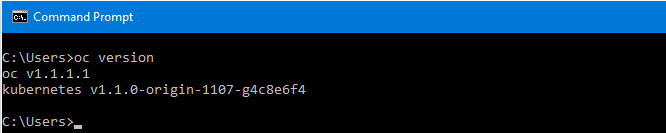

Installing OpenShift 3 CLI¶
- Download latest version of OpenShift 3 CLI for Windows from https://github.com/openshift/origin/releases.
- Unzip the archive and move the OC client tool to your desired location.
- Now set the System Environment Variable PATH with location of OC client tool location.
- Refer this link to set environment variables on Windows.
- Now verify OpenShift 3 CLI installation is configured correctly. To do so, open Command Prompt and run:
oc version
- If OC client tool is configured correctly, you will get version of OC binary as shown in below image
